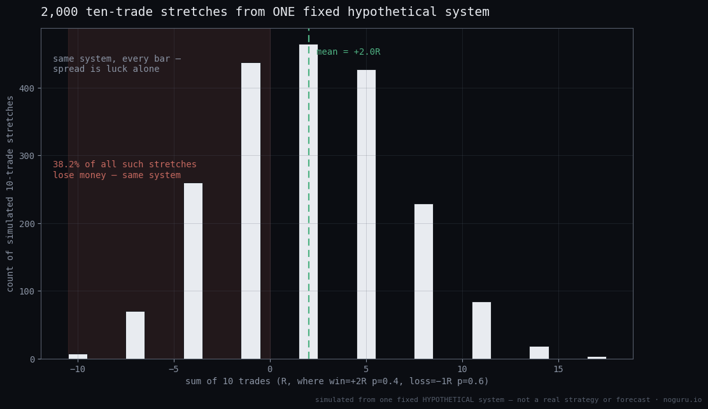

Trading Academy · Module 5 — The long game · Lesson 1/4 · Lesson 19 of 22 in the curriculum · ~6 min read
Ten trades tell you nothing
Ten trades is the sample most opinions about trading are built on — a screenshot month, a hot streak, a bad first week. This lesson runs one fixed hypothetical system thousands of times and shows what ten trades can actually prove: almost nothing. Judging a method — or a person — on ten trades is astrology with a spreadsheet.
Find something on this page
Read this lesson in context
This is the original free lesson. Its hypothetical examples teach general trading concepts. References to futures, stops, other strategies or older track-record formats are not statements of NoGuru’s current spot configuration.
Public reading
The system, invented for this page: it wins 4 trades in every 10 on average, winners pay +2R, losers cost −1R (R as defined in lesson 1.3 — the amount risked). Its expectancy is 0.4 × 2R − 0.6 × 1R = +0.2R per trade : a genuinely profitable method, which over ten trades should average +2R. Now watch what "should" means. Five consecutive ten-trade stretches, simulated from that same unchanging system:
| Stretch | 1 | 2 | 3 | 4 | 5 |
|---|---|---|---|---|---|
| Ten-trade total | −4R | +11R | +2R | −7R | +8R |
Simulated draws from one fixed hypothetical system — same rules, same edge, every column. The five average exactly +2R; no single stretch is obliged to.
Nothing changed between stretch 2 and stretch 4 — not the rules, not the edge, not the discipline. The +11R stretch would screenshot beautifully; the −7R stretch feels like proof the method is broken; both are the same coin thrown ten times. Across all possible ten-trade stretches, this profitable system finishes negative 38.2% of the time. More than a third of its own two-week windows look like a losing method, forever, by construction.
38.2% of all ten-trade stretches from this same profitable, unchanging system finish negative — exact binomial arithmetic, not a sampled estimate.

The corollary reaches everything you read online: anyone showing you hand-picked ten-trade windows can harvest the right-hand tail of exactly this spread, with no edge at all. Small samples are not weak evidence — they are raw material for whichever story the seller prefers.
The full lesson shows the whole distribution — 2,000 simulated stretches in one histogram — puts honest numbers on how many trades a verdict really needs (hundreds, not tens), counts the losing streaks a working system routinely serves, explains how survivorship turns luck into advertising, shows why our own track record publishes losers and sample counts, and ends with an exercise in reading the histogram without flinching.
← What technical analysis can and cannot do The journal is the edge you control →
Original source risk note
Trading cryptocurrencies involves substantial risk of loss and is not suitable for every investor. The academy teaches method and arithmetic — it does not and cannot promise trading results. Nothing here is investment advice.